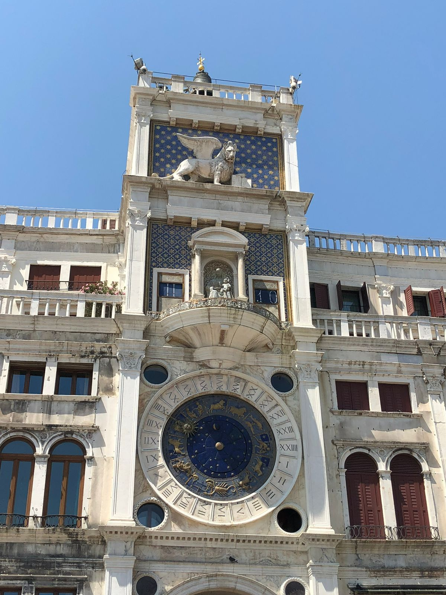

Venecia
Su fundación data del año 421. Los habitantes del Véneto, expulsados por los ostrogodos y los lombardos, se refugiaron en estas tierras pantanosas de la desembocadura del río Po constituyendo la ciudad de Venecia.

Venecia, la capital de la región de Véneto en el norte de Italia, abarca más de 100 islas pequeñas en una laguna del mar Adriático. No tiene caminos, sino solo canales, incluida la vía pública del Gran Canal, bordeada de palacios renacentistas y góticos

Torre dell'Orologio es, como su nombre indica, una torre del reloj situada en la plaza de San Marcos en Venecia, junto a la Procuratie Vecchie. Alberga el reloj más importante de la ciudad, el reloj de San Marcos.

Imagen del mapa del rio de Po tomada de: https://blog-italia.com/espacios-naturales-de-italia/valle-del-po/mapas.